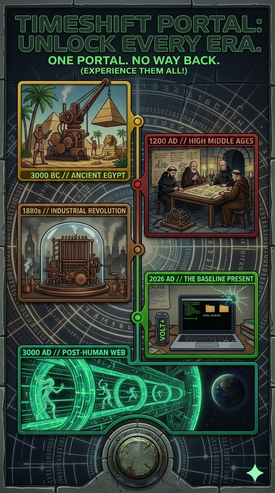

T I M E S H I F T _ P O R T A L
You are about to leave your timeline.
📂 Chronological Event File: "Anomalous Deployment"
// 📖 The Story
"In 2026, three students were building a normal college website. But when they pushed their code to GitHub, something went terribly wrong — or terribly right."
// ⚡ The Accident
Your team was simply attempting to finish a standard web development assignment. However, an unexpected structural conflict occurred when one member inadvertently configured custom quantum routing code algorithms directly into standard HTML layouts. The microsecond the app repository was deployed onto the live hosting platform, the server node tore a physical breach directly through the digital fabric of our temporal plane.
// 🌀 The Discovery
End-users navigating across ordinary pages unexpectedly began physical-feedback translations, safely experiencing target environments and divergent eras directly rather than processing written documents. The live production server had organically converted into an operating, multi-threaded living time machine.
// 🔐 The Secret
The deployment can no longer be systematically modified or brought offline. Standard administrative commands, directory wipes, or repository terminations fail immediately; the runtime footprint has duplicated and embedded itself permanently across all human timelines concurrently.
// 📡 The Mission
Accepting their fate, the development squad transitioned operations from basic programming to direct historic preservation. They are now officially organized as the world's first accidental time travel journalists. This interface serves as their active archival grid.